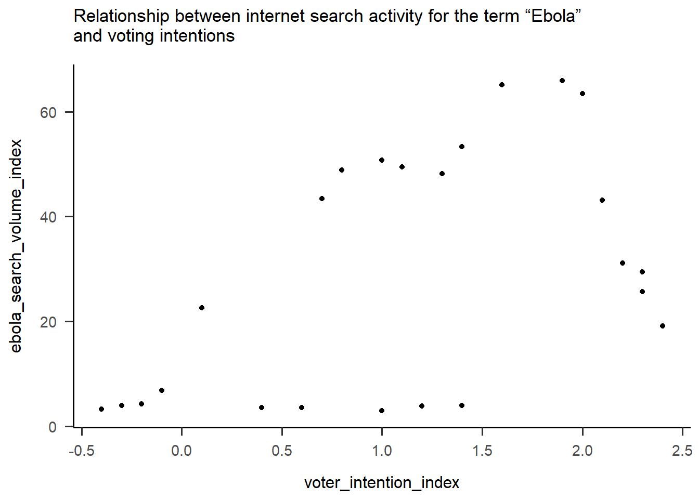
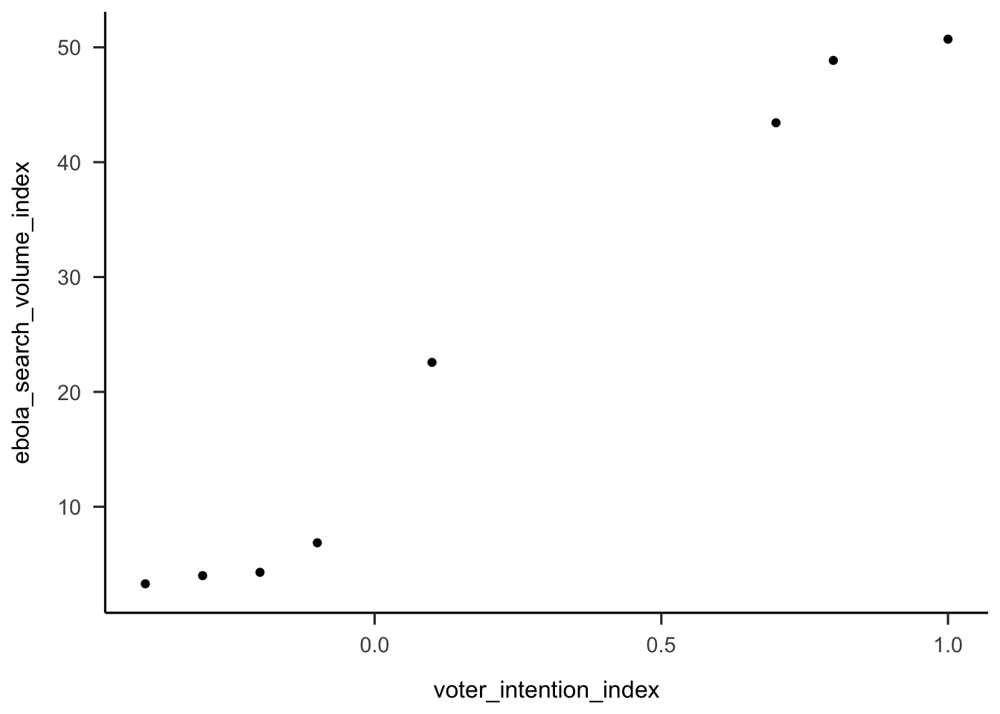
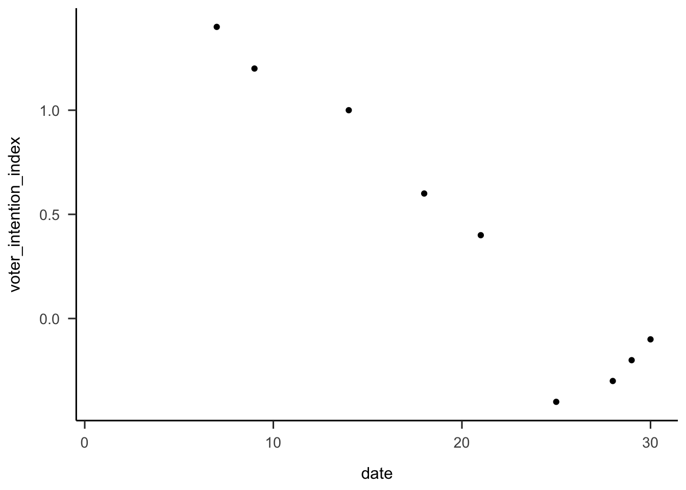
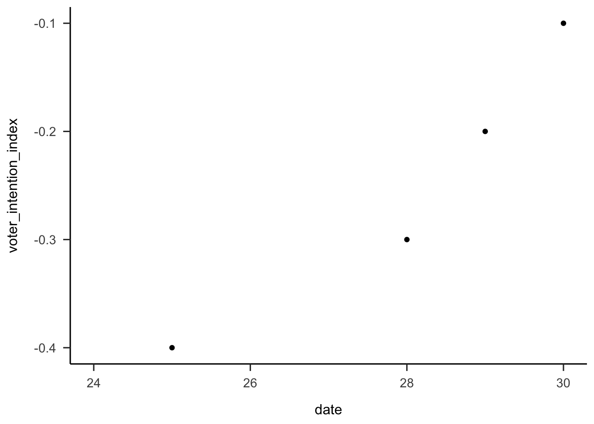
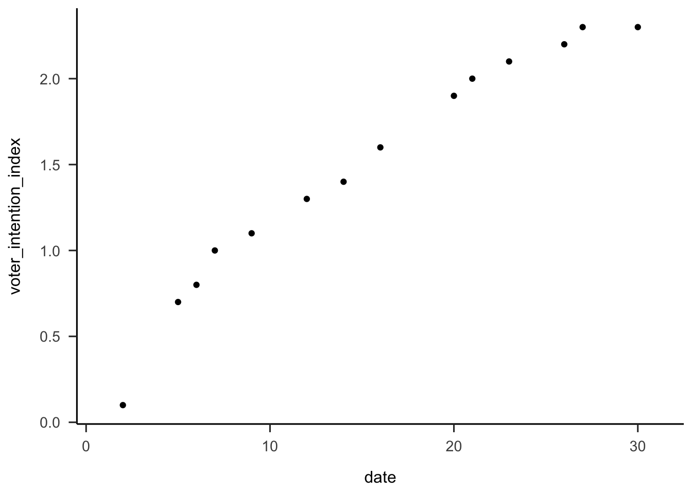
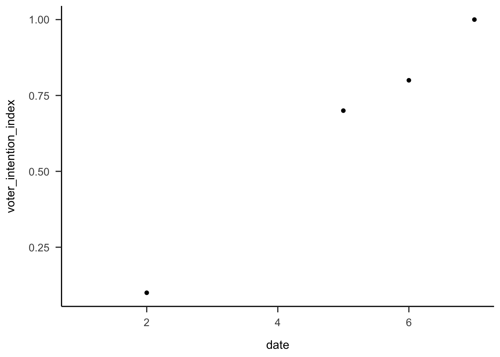

Last updated: 2020-09-11
Checks: 6 1
Knit directory: sakiko_project/
This reproducible R Markdown analysis was created with workflowr (version 1.6.2). The Checks tab describes the reproducibility checks that were applied when the results were created. The Past versions tab lists the development history.
The R Markdown is untracked by Git. To know which version of the R Markdown file created these results, you’ll want to first commit it to the Git repo. If you’re still working on the analysis, you can ignore this warning. When you’re finished, you can run wflow_publish to commit the R Markdown file and build the HTML.
Great job! The global environment was empty. Objects defined in the global environment can affect the analysis in your R Markdown file in unknown ways. For reproduciblity it’s best to always run the code in an empty environment.
The command set.seed(20200910) was run prior to running the code in the R Markdown file. Setting a seed ensures that any results that rely on randomness, e.g. subsampling or permutations, are reproducible.
Great job! Recording the operating system, R version, and package versions is critical for reproducibility.
Nice! There were no cached chunks for this analysis, so you can be confident that you successfully produced the results during this run.
Great job! Using relative paths to the files within your workflowr project makes it easier to run your code on other machines.
Great! You are using Git for version control. Tracking code development and connecting the code version to the results is critical for reproducibility.
The results in this page were generated with repository version 045016c. See the Past versions tab to see a history of the changes made to the R Markdown and HTML files.
Note that you need to be careful to ensure that all relevant files for the analysis have been committed to Git prior to generating the results (you can use wflow_publish or wflow_git_commit). workflowr only checks the R Markdown file, but you know if there are other scripts or data files that it depends on. Below is the status of the Git repository when the results were generated:
Ignored files:
Ignored: .DS_Store
Ignored: .Rhistory
Ignored: .Rproj.user/
Untracked files:
Untracked: analysis/coding2.Rmd
Note that any generated files, e.g. HTML, png, CSS, etc., are not included in this status report because it is ok for generated content to have uncommitted changes.
There are no past versions. Publish this analysis with wflow_publish() to start tracking its development.
In this coding exercise, you will work with data from a study published in Psychological Science.
Beall, A. T., Hofer, M. K., & Shaller, M. (2016). Infections and elections: Did an Ebola outbreak influence the 2014 U.S. federal elections (and if so, how)? Psychological Science, 27, 595-605.
library(tidyverse)
library(here)
library(janitor)
library(papaja)
library(ggeasy)
library(ggbeeswarm)
library(RColorBrewer)beall <- read_csv(here("data", "2_Beall.csv"))Use glimpse() or names() or str() to get an idea what is included in the dataset
glimpse(beall)Rows: 67
Columns: 15
$ Month <dbl> NA, NA, 9, 9, 9, 9, 9, 9, 9, 9,…
$ Date <dbl> NA, NA, 1, 2, 3, 4, 5, 6, 7, 8,…
$ Two.weeks.prior.to.outbreak.only <dbl> 0, 0, 0, 0, 0, 0, 0, 0, 0, 0, 0…
$ Nationwide.Republican.Support <dbl> NA, NA, NA, NA, NA, NA, NA, NA,…
$ Nationwide.Democratic.Support <dbl> NA, NA, NA, NA, NA, NA, NA, NA,…
$ Voter.Intention.Index <dbl> NA, NA, NA, NA, NA, NA, NA, NA,…
$ Voter.Intention.Change.Index <dbl> NA, NA, NA, NA, NA, NA, NA, NA,…
$ Daily.Ebola.Search.Volume <dbl> NA, NA, 3, 5, 6, 4, 4, 3, 3, 3,…
$ Ebola.Search.Volume.Index <dbl> NA, NA, 2.86, 3.14, 3.57, 3.71,…
$ Daily.ISIS.Search.Volume <dbl> NA, NA, 14, 37, 48, 37, 27, 23,…
$ ISIS.Search.Volume.Index <dbl> NA, NA, NA, NA, NA, NA, NA, NA,…
$ DJIA <dbl> NA, NA, NA, 17067.56, 17078.28,…
$ LexisNexisNewsVolume <dbl> NA, NA, 23, 38, 52, 50, 51, 31,…
$ LexisNexisNewsVolumeWeek <dbl> NA, NA, 37.57, 34.86, 36.43, 37…
$ `filter_$` <dbl> NA, NA, 1, 1, 1, 1, 1, 1, 1, 1,…The variables are inconsistently named (upper, lower, .). Use clean_names() to make them consistent.
beall_clean <- beall %>%
clean_names()There are lots of variables in this data set that we wont need. Make a smaller data set that only includes month, day, two_weeks, voter_intention_index, and ebola_search_volume_index.
beall_select <- beall_clean %>%
select(month, date, two_weeks_prior_to_outbreak_only, voter_intention_index, ebola_search_volume_index)Use geom_point to make a scatter plot the relation between voter intention and ebola.
beall_select %>%
ggplot(aes(x = voter_intention_index, y = ebola_search_volume_index)) +
geom_point() +
theme_apa()Warning: Removed 43 rows containing missing values (geom_point).
beall_select %>%
filter(two_weeks_prior_to_outbreak_only == 1) %>%
ggplot(aes(x = voter_intention_index, y = ebola_search_volume_index)) +
geom_point() +
theme_apa()Warning: Removed 6 rows containing missing values (geom_point).
# whole month
beall_select %>%
filter(month == 9) %>%
ggplot(aes(x = date, y = voter_intention_index)) +
geom_point() +
theme_apa()Warning: Removed 21 rows containing missing values (geom_point).
# last week
beall_select %>%
filter(month == 9) %>%
filter(date > 23) %>%
ggplot(aes(x = date, y = voter_intention_index)) +
geom_point() +
theme_apa()Warning: Removed 3 rows containing missing values (geom_point).
# whole month
beall_select %>%
filter(month == 10) %>%
ggplot(aes(x = date, y = voter_intention_index)) +
geom_point() +
theme_apa()Warning: Removed 17 rows containing missing values (geom_point).
# last week
beall_select %>%
filter(month == 10) %>%
filter(date < 8) %>%
ggplot(aes(x = date, y = voter_intention_index)) +
geom_point() +
theme_apa()Warning: Removed 3 rows containing missing values (geom_point).
Great, now your dataframe has 192 observations intead of 96 observations.
Use group_by and summarise to get a dataframe of summary stats, including mean, sd, n, stderror for each stimulus.
Use the summary df to make a column graph plotting mean looking as a function of stimulus. Make it fancy by …
Great! looks like the error bars overlap, so there is unlikely to be a significant difference in the amount of time that infants looked at familiar vs. unfamiliar during the familiarisation.
The other DV in this experiment is the propootion of time that infants spend looking at the person who was associated with the familiar song. The authors expected infants not to show any preferneces at baseline and that looking time at the person who sung the familiar song would be about 0.50. At test, however, if infants associate people with familiar music, the authors expected infants to show a preference for the person who sung the song that was familiar to them i.e. to look > 0.50.
Replicate the process above for the test data… 1. start with the renamed df and select just id and the variables associated with the test 2. make the data long so you have one column with test time in it (baseline, test) and one with proportion scores 3. use group_by and summarise to make a df of summary stats (mean, sd, n, stderror) 4. plot the proportion scores as a function of test time, including error bars. Try some fancy things with this plot… + maybe add a dashed horizontal line at 0.5 + try a different colour palette with RColorBrewer, type display.brewer.all() in the console to see all the options + add a title to the plot, maybe a caption at the bottom + see if you can remove the legend, its not really necessary
# make the data long
#make summary stats
# plot Try geom_jitter and geom_boxplot to visualise the raw proportion scores at baseline and test. Try layering the jitter on top of the boxplot. You might want to make the point transperant using alpha = 0.5
sessionInfo()R version 3.5.1 (2018-07-02)
Platform: x86_64-apple-darwin15.6.0 (64-bit)
Running under: macOS Sierra 10.12.6
Matrix products: default
BLAS: /Library/Frameworks/R.framework/Versions/3.5/Resources/lib/libRblas.0.dylib
LAPACK: /Library/Frameworks/R.framework/Versions/3.5/Resources/lib/libRlapack.dylib
locale:
[1] en_AU.UTF-8/en_AU.UTF-8/en_AU.UTF-8/C/en_AU.UTF-8/en_AU.UTF-8
attached base packages:
[1] stats graphics grDevices utils datasets methods base
other attached packages:
[1] RColorBrewer_1.1-2 ggbeeswarm_0.6.0 ggeasy_0.1.2
[4] papaja_0.1.0.9842 janitor_1.2.0 here_0.1
[7] forcats_0.5.0 stringr_1.4.0 dplyr_1.0.1
[10] purrr_0.3.3 readr_1.3.1 tidyr_1.1.0
[13] tibble_3.0.3 ggplot2_3.3.2 tidyverse_1.3.0
loaded via a namespace (and not attached):
[1] Rcpp_1.0.5 lubridate_1.7.4 utf8_1.1.4
[4] assertthat_0.2.1 rprojroot_1.3-2 digest_0.6.25
[7] R6_2.4.1 cellranger_1.1.0 backports_1.1.8
[10] reprex_0.3.0 evaluate_0.14 httr_1.4.1
[13] pillar_1.4.6 rlang_0.4.7 readxl_1.3.1
[16] rstudioapi_0.11.0-9000 blob_1.2.1 rmarkdown_1.15
[19] labeling_0.3 munsell_0.5.0 broom_0.7.0
[22] compiler_3.5.1 httpuv_1.5.2 vipor_0.4.5
[25] modelr_0.1.8 xfun_0.8 pkgconfig_2.0.3
[28] htmltools_0.5.0 tidyselect_1.1.0 workflowr_1.6.2
[31] fansi_0.4.1 crayon_1.3.4 dbplyr_1.4.4
[34] withr_2.2.0 later_1.1.0.1 grid_3.5.1
[37] jsonlite_1.7.0 gtable_0.3.0 lifecycle_0.2.0
[40] DBI_1.0.0 git2r_0.27.1 magrittr_1.5
[43] scales_1.1.1 cli_2.0.2 stringi_1.4.6
[46] farver_2.0.3 fs_1.4.1 promises_1.1.1
[49] snakecase_0.9.2 xml2_1.3.2 ellipsis_0.3.1
[52] generics_0.0.2 vctrs_0.3.2 tools_3.5.1
[55] glue_1.4.1 beeswarm_0.2.3 hms_0.5.3
[58] yaml_2.2.1 colorspace_1.4-1 rvest_0.3.6
[61] knitr_1.23 haven_2.3.1